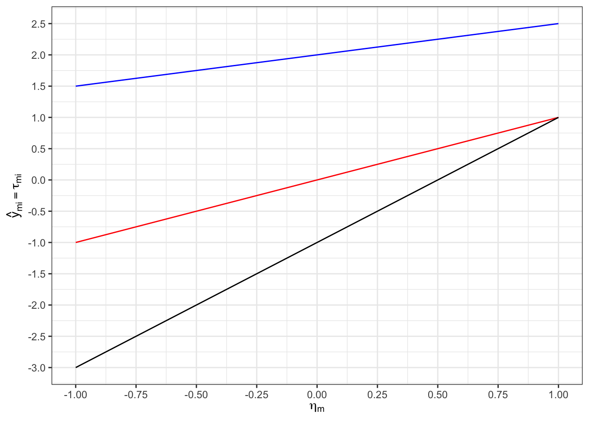

Messmodelle der Klassischen Testtheorie
Neben den behandelten IRT-Modellen können Modelle, die auf Überlegungen der Klassischen Testtheorie (KTT) beruhen, verwendet werden, um Testdaten durch Personen- und Itemparameter zu erklären. Sie können sich also auch bei den KTT-Modellen eine Datenmatrix vorstellen, dessen Werte durch verschiedene Modelle erklärt werden soll. Zu Beginn müssen wir aber festhalten, dass sich mit dem Wechsel zur KTT auch die Notation der Vorlesung ändert.
Sie haben in den Abschnitten zur IRT die Datenmatrix \(\mathbf{U}\) kennengelernt, die beobachtete Werte \(u_{ij}\) enthielt. In diesem Abschnitt bezeichnet die Vorlesung diese Datenpunkte stattdessen als \(y_{mi}\). Diese könnten in einer Matrix wie folgt angeordnet sein:
\[\begin{equation} \begin{bmatrix} 3.43 & 5.54 & 1.12 \\ -5.2 & 1.2 & -0.3 \\ 0.03 & -0.04 & -1.5 \\ \end{bmatrix} \end{equation}\]
In diesem Beispiel ist \(y_{21} = -5.2\). Der Index \(m\) bezeichnet eine bestimmte Person und der Index \(i\) bezeichnet eine bestimmte Variable. Üblicherweise sind mit Variablen Items gemeint.
Grundgleichung der KTT
Der Grundgedanke der behandelten KTT-Modelle ist es, einen beobachteten Wert \(y_{mi}\) einer Person \(m\) auf einer Variablen \(i\) linear in einen wahren Wert \(\tau_{mi}\) und einen Messfehler \(\epsilon_{mi}\) zu zerlegen:
\[y_{mi} = \tau_{mi} + \epsilon_{mi}\]
Nimmt man an, dass die Messfehler und wahren Werte in der Population unkorreliert sind, folgt daraus die folgende Varianzzerlegung der beobachteten Variablen:
\[Var(Y_i) = Var(\tau_i) + Var(\epsilon_i)\]
Exkurs: Warum ist das so?
Addiert man zwei Zufallsvariablen \(X\) und \(Y\) miteinander, so ist
\[Var(X + Y) = Var(X) + Var(Y) + 2 Cov(X, Y)\]
In diesem Fall ist
\[Var(Y_i)\]
\[= Var(\tau_i + \epsilon_i)\]
\[= Var(\tau_i) + Var(\epsilon_i) + 2 \cdot Cov(\tau_i, \epsilon_i)\]
Nach Annahme ist \(Cov(\tau_i, \epsilon_i):= 0\). Es folgt
\[Var(Y_i) = Var(\tau_i) + Var(\epsilon_i)\]
\(\tau\)-kongenerische Messmodelle
Nimmt man an, dass sich der wahre Wert durch eine Kombination von Personen- und Itemparametern darstellen lässt, resultieren Messmodelle mit Personen- und Itemparametern. Im allgemeinsten Fall wird der wahre Wert als Funktion eines Item-Intercepts \(\alpha_i\), einer Faktorladung \(\lambda_i\) und eines latenten Traitwerts \(\eta\) ausgedrückt:
\[\tau_{mi} = \alpha_i + \lambda_i \cdot \eta_m\]
Durch Einsetzen resultiert ein \(\tau\)-kongenerisches Messmodell:
\[y_{mi} = \alpha_i + \lambda_i \cdot \eta_m + \epsilon_{mi}\]
Vergleichen Sie das \(\tau\)-kongenerisches Messmodell mit der einfachen Regression. Was sind Unterschiede und was sind Gemeinsamkeiten?
Lösung
Auch in der linearen Regression sagt man Werte in einem Kriterium \(y_{m}\) durch eine lineare Funktion vorher. Eine einfache lineare Regression für \(y_{m}\) sähe so aus:
\(y_{m} = \beta_0 + \beta_1 x_{m} + \epsilon_{m}\)
Das sieht dem \(\tau\)-kongenerisches Messmodell sehr ähnlich. Das Intercept der Regression \(\beta_0\) entspricht konzeptuell dem Item-Intercept \(\alpha_i\), der Slope der Regression \(\beta_1\) entspricht konzeptuell der Faktorladung \(\lambda_i\), und der Prädiktor \(x_m\) entspricht konzeptuell dem latenten Trait \(\eta_m\).
Es gibt aber zwei wichtige Unterschiede: (1) Während die Prädiktorvariable \(x_m\) direkt im Datensatz vorliegt, muss der Personenparameter \(\eta_m\) aus den Daten geschätzt werden. (2) Die einfache lineare Regression geht davon aus, dass es nur eine beobachtete Variable \(y_m\) gibt. Um, wie im vorherigen Punkt gefordert, eine latente Variable schätzen zu können, sind in Messmodellen hingegen mehrere Items notwendig. Daher liegt bei den Messmodellen noch ein weiterer Index \(i\) am \(y_{mi}\) vor. Ein Messmodell ist daher ein System von Gleichungen, die die Form der linearen Regression haben.
Zusammengefasst lässt sich sagen, dass die behandelten Messmodelle Systeme einfacher Regressionen sind, in denen die Werte der Prädiktorvariable (also der latenten Traits) aus den Daten geschätzt werden.
Wie die lineare Regression auch, lassen sich durch Messmodelle vorhergesagte Werte anschaulich graphisch darstellen. Auf der y-Achse finden Sie die durch ein \(\tau\)-kongenerisches Modell vorhergesagten Itemantworten. Auf der x-Achse finden Sie Werte des latenten Traits.
Lesen Sie jeweils die Itemparameter des zur blauen, roten und schwarzen Gerade korrespondierenden Items ab.
Lösung
Item \(1\) (blau):
\(\alpha_1 = 2\), \(\lambda_1 = 0.5\)
Item \(2\) (rot):
\(\alpha_2 = 0\), \(\lambda_2 = 1\)
Item \(3\) (schwarz):
\(\alpha_3 = -1\), \(\lambda_3 = 2\)
Kennt man die Item- und Personenparameter, lässt sich berechnen, welche Itemantwort ein Messmodell für eine Person vorhersagt.
Welchen Wert sagt das skizzierte \(\tau\)-kongenerische Messmodell für eine Person mit einem Personenparameter von \(\eta_m = 1.5\) auf Item \(2\) vorher?
Lösung
\(\hat{y}_{m2} = 0 + 1 \cdot 1.5 = 1.5\)
Das Modell sagt einen Wert von \(1.5\) vorher.
Bei der letzten Aufgabe konnten Sie bereits feststellen, dass das \(\tau\)-kongenerische Messmodell in der Form, wie wir es in der Veranstaltung behandeln, kontinuierliche Werte vorhersagt - z.B. den Wert \(1.5\) in der letzten Aufgabe. Nach der intensiven Behandlung von IRT-Modellen kommt Ihnen das vielleicht suspekt vor, denn bei testtheoretischen Anwendungen beobachten wir i.d.R. ordinale Daten. Daher möchte ich hier kurz anmerken, dass sich die KTT-Messmodelle durch einen sogenannten threshold-Prozess so erweitern lassen, dass sie, wie die IRT-Modelle auch, ordinale Vorhersagen treffen. Diese Erweiterung nehmen wir im Laufe der Veranstaltung der Einfachheit halber aber nicht vor. Stattdessen akzeptieren wir zur Heranführung an die Modelle, dass die KTT-Messmodelle kontinuierliche Werte vorhersagen, die Daten aber oft ordinal sind.
In der nächsten Aufgabe geht es darum explizit zu machen, dass Messmodelle Systeme linearer Gleichungen sind.
Schreiben Sie das lineare Gleichungssystem auf, das aus dem Modell mit den abgelesenen Itemparametern resultiert. Ignorieren Sie dabei latente und Fehlervarianzen.
Lösung
\(y_{m1} = 2 + 0.5 \cdot \eta_m + \epsilon_{m1}\)
\(y_{m2} = 0 + 1 \cdot \eta_m + \epsilon_{m2}\)
\(y_{m3} = -1 + 2 \cdot \eta_m + \epsilon_{m3}\)
Welchen Antwortvektor sagt das \(\tau\)-kongenerische Messmodell für eine Person mit einem latenten Trait von \(\eta_m = -2\) vorher?
Lösung
\(2 + 0.5 \cdot (-2) = 1\)
\(0 + 1 \cdot (-2) = -2\)
\(-1 + 2 \cdot (-2) = -5\)
Das Modell sagt den Antwortvektor \(=[1, -2, -5]\) vorher.
Seien \(\epsilon_{m1} = 0.2\), \(\epsilon_{m2} = -1\), \(\epsilon_{m3} = 1.2\), \(\eta_m = -2\) und die Itemparameter wie in den vorherigen Aufgaben.
Rekonstruieren Sie die beobachteten Itemantworten.
Lösung
Es wurden die Werte
\(y_{m1} = 2 + 0.5 \cdot (-2) + 0.2 = 1.2\)
\(y_{m2} = 0 + 1 \cdot (-2) - 1 = -3\)
\(y_{m3} = -1 + 2 \cdot (-2) + 1.2 = -3.8\)
beobachtet.
Restringierte Messmodelle
Mit der Einführung von Restriktionen auf den Itemparametern resultieren strengere Messmodelle.
Die Restriktionen der Messmodelle beziehen sich auf Intercepts, Faktorladungen und Fehlervarianzen. Wie könnte man den oben gezeigten Plot (blaues, rotes, schwarzes Item) ergänzen, um die Fehlervarianzen sichtbar zu machen?
Das eben behandelte \(\tau\)-kongenerische Messmodell ist unter den behandelten Modellen das flexibelste Modell. Das restriktivste Modell nennt sich \(\tau\)-paralleles Messmodell. Im \(\tau\)-parallelen Messmodell wird angenommen, dass die Item-Intercepts, Faktorladungen und Fehlervarianzen aller Items gleich sind. Durch das “Fallenlassen” von Indices in der Modellgleichung kann man diese Gleichsetzung deutlich machen:
\[y_{mi} = \alpha + \lambda \cdot \eta_m + \epsilon_{mi}\]
\[Var(\epsilon_i) = Var(\epsilon_j)\]
für alle \(i \ne j\)
Das \(\alpha\) und \(\lambda\) haben hier keinen Index \(i\) mehr. Das ist hier gleichbedeutend damit, dass es nur einen Parameterwert für alle Items gibt. Ausgehend von dem dadurch beschriebenen \(\tau\)-parallelen Messmodell lassen sich schrittweise Parametergruppen zwischen Items befreien, bis Sie wieder beim \(\tau\)-kongenerischen Modell ankommen. Die folgende Grafik stellt diese Schritte schematisch dar:

Ein beispielhaftes Messmodell impliziert das lineare Gleichungssystem
\(y_{m1} = \alpha_1 + \lambda \cdot \eta_m + \epsilon_{m1}\)
\(y_{m2} = \alpha_2 + \lambda \cdot \eta_m + \epsilon_{m2}\)
\(y_{m3} = \alpha_3 + \lambda \cdot \eta_m + \epsilon_{m3}\)
\(y_{m4} = \alpha_4 + \lambda \cdot \eta_m + \epsilon_{m4}\)
mit Fehlervarianzen \(Var(\epsilon_1)\), \(Var(\epsilon_2)\), \(Var(\epsilon_3)\), \(Var(\epsilon_4)\).
Um welches Messmodell handelt es sich?
Lösung
Alle Itemparameter bis auf die Faktorladungen sind itemspezifisch. Das lineare Gleichungssystem resultiert aus einem essentiell \(\tau\)-äquivalenten Messmodell.
Passen Sie den Plot zu den vorhergesagten Werten im \(\tau\)-kongenerischen Messmodell so an, dass er jeweils aus einem essentiell \(\tau\)-äquivalenten, \(\tau\)-äquivalenten, essentiell \(\tau\)-parallelen und \(\tau\)-parallelen Messmodell hätte resultieren können.
Messmodelle in R
Sie haben in der Vorlesung gelernt, wie man Messmodelle in R schätzt. In den folgenden Aufgaben geht es darum, anhand eines Datenbeispiels mit dem R-Output eines Messmodells aus der Software lavaan zu arbeiten.
Datenbeispiel
Es wurden \(253\) Antworten auf einen Test mit fünf Items im 6-Punkt Ratingskalenformat erhoben. Die ersten Zeilen des Datensatzes sehen so aus:
head(dat) item_1 item_2 item_3 item_4 item_5
person1 3 1 2 2 1
person2 3 2 4 2 1
person3 2 1 3 2 2
person4 2 4 3 2 4
person5 3 2 2 2 2
person6 2 2 3 3 1Modellspezifikation
Mit Hilfe des folgenden Codes wurde ein Messmodell geschätzt:
library(lavaan)This is lavaan 0.6-19
lavaan is FREE software! Please report any bugs.model_1 <- '
f =~ 1*item_1 + 1*item_2 + 1*item_3 + 1*item_4 + 1*item_5
item_1 ~ int1*1
item_2 ~ int2*1
item_3 ~ int3*1
item_4 ~ int4*1
item_5 ~ int5*1
item_1 ~~ eps1*item_1
item_2 ~~ eps2*item_2
item_3 ~~ eps3*item_3
item_4 ~~ eps4*item_4
item_5 ~~ eps5*item_5
# Make latent variance explicit (would also be added automatically)
f ~~ lvar*f
'
model_1_fit <- sem(model_1, data = dat, std.lv = FALSE)Erstellen Sie ein Pfaddiagramm des Modells.
Schreiben Sie das lineare Gleichungssystem auf, das durch das Modell impliziert wird. Schreiben Sie auch alle latenten und Fehlervarianzen mit auf.
Lösung
\[y_{m1} = \alpha_1 + 1 \cdot \eta_m + \epsilon_{m1}\]
\[y_{m2} = \alpha_2 + 1 \cdot \eta_m + \epsilon_{m2}\]
\[y_{m3} = \alpha_3 + 1 \cdot \eta_m + \epsilon_{m3}\]
\[y_{m4} = \alpha_4 + 1 \cdot \eta_m + \epsilon_{m4}\]
\[y_{m5} = \alpha_5 + 1 \cdot \eta_m + \epsilon_{m5}\]
mit freien Fehlervarianzen \(Var(\epsilon_1), ..., Var(\epsilon_5)\) und freier latenter Varianz \(Var(\eta)\).
Um welche Art von Messmodell handelt es sich?
Lösung
Die Intercepts und Residualvarianzen werden frei geschätzt. Die Faktorladungen sind zwischen Items fixiert. Es handelt sich um ein essentiell \(\tau\)-äquivalentes Modell.
Interpretation des Modelloutputs
Man kann die geschätzten Parameter folgendermaßen anzeigen:
summary(model_1_fit, standardized = TRUE)lavaan 0.6-19 ended normally after 18 iterations
Estimator ML
Optimization method NLMINB
Number of model parameters 11
Number of observations 253
Model Test User Model:
Test statistic 7.908
Degrees of freedom 9
P-value (Chi-square) 0.543
Parameter Estimates:
Standard errors Standard
Information Expected
Information saturated (h1) model Structured
Latent Variables:
Estimate Std.Err z-value P(>|z|) Std.lv Std.all
f =~
item_1 1.000 0.756 0.643
item_2 1.000 0.756 0.554
item_3 1.000 0.756 0.600
item_4 1.000 0.756 0.700
item_5 1.000 0.756 0.677
Intercepts:
Estimate Std.Err z-value P(>|z|) Std.lv Std.all
.item_1 (int1) 2.466 0.074 33.354 0.000 2.466 2.097
.item_2 (int2) 2.553 0.086 29.761 0.000 2.553 1.871
.item_3 (int3) 2.451 0.079 30.941 0.000 2.451 1.945
.item_4 (int4) 2.443 0.068 35.956 0.000 2.443 2.261
.item_5 (int5) 2.494 0.070 35.500 0.000 2.494 2.232
Variances:
Estimate Std.Err z-value P(>|z|) Std.lv Std.all
.item_1 (eps1) 0.811 0.086 9.459 0.000 0.811 0.587
.item_2 (eps2) 1.290 0.127 10.130 0.000 1.290 0.693
.item_3 (eps3) 1.015 0.103 9.823 0.000 1.015 0.640
.item_4 (eps4) 0.596 0.068 8.800 0.000 0.596 0.510
.item_5 (eps5) 0.677 0.074 9.097 0.000 0.677 0.542
f (lvar) 0.572 0.066 8.697 0.000 1.000 1.000Ist das Modell konvergiert?
Lösung
Ja, das erkennt man an ended normally after 18 iterations.
Wofür steht vermutlich ESTIMATOR ML? Hier dürfen Sie raten.
Lösung
ML: Maximum Likelihood
Wie viele freie Parameter hat das Modell?
Listen Sie die Parameter in formaler Notation auf.
Lösung
Es lässt sich ablesen: Number of model parameters 11
Diese sind 5 Intercepts \(\alpha_{1}, ..., \alpha_{5}\), 5 Residualvarianzen \(Var(\epsilon_1), ..., Var(\epsilon_5)\) und eine latente Varianze \(Var(\eta)\).
Wofür steht Number of observations?
Lösung
Die Stichprobengröße
Wofür stehen jeweils die Spalten Estimate, Std.Err, z-value, P(>|z|), Std.lv, Std.all im Output?
Lösung
Estimate: Unstandardisierte Parameterwerte
Std.Err: Standardfehler
z-value: Der Bruch Estimate / Std.Err. Das entspricht der Prüfstatistik des Wald Tests gegen die H0, dass der Parameter gleich Null ist.
P(>|z|): Zweiseitiger p-Wert des Wald Tests gegen die H0, dass der Parameter gleich Null ist.
Std.lv: Standardisierte Lösung, in der die latente Varianz auf 1 gesetzt wurde
Std.all: Standardisierte Lösung, in der die latente Varianz und die Gesamtvarianz aller Items auf 1 gesetzt wurden
Warum ist die Spalte Std.Err bei manchen Parameter leer?
Lösung
Wenn Parameter fixiert werden, lässt sich für diese kein Standardfehler und folglich auch keine Wald-Statistik berechnen. Das betrifft im gezeigten Output die Faktorladungen.
Rechnen mit Varianzen
Sie haben in der Vorlesung gelernt, wie man \(Var(\tau_i)\) und \(Var(Y_i)\) berechnet. Berechnen Sie \(Var(\tau_3)\) und \(Var(Y_3)\) für die unstandardisierte und beide standardisierten Lösungen. Stellen Sie zuvor eine Vermutung an, welche Werte zwangsweise gleich \(1\) sein müssen.
Lösung
Es sind
\[Var(\tau_i) = Var(\alpha_i + \lambda_i \cdot \eta) = \lambda_i^2 \cdot Var(\eta)\]
und
\[Var(Y_i) = Var(\tau_i) + Var(\epsilon_i)\]
Unstandardisiert
\(Var(\tau_3) = 1^2 \cdot 0.572 = 0.572\)
\(Var(Y_3) = 0.572 + 1.015 = 1.587\)
Standardisierte latente Variable
\(Var(\tau_3) = 0.756^2 \cdot 1 \approx 0.572\)
\(Var(Y_3) = 0.572 + 1.015 = 1.587\)
Latente Variable und Itemvariablen standardisiert
\(Var(\tau_3) = 0.600^2 \cdot 1 = 0.36\)
\(Var(Y_3) = 0.360 + 0.640 = 1\)
Berechnen Sie den Anteil systematischer Varianz an der Gesamtvarianz für Item \(2\).
Lösung
\(Var(\tau_2) = \lambda_2^2 \cdot Var(\eta) = 1^2 \cdot 0.572 = 0.572\)
\(Var(Y_2) = Var(\tau_2) + Var(\epsilon_2) = 0.572 + 1.290 = 1.862\)
\(Rel(Y_2) = \frac{Var(\tau_2)}{Var(Y_2)} = \frac{0.572}{1.862} \approx 0.31\)
Stellen Sie eine Vermutung an: Kann sich \(Rel(Y_i)\) zwischen Items unterscheiden, obwohl die Faktorladungen fixiert sind? Warum (nicht)?
Lösung
Ja. In die Berechnung gehen die Werte \(\lambda_i\), \(Var(\eta)\) und \(Var(\epsilon_i)\) ein. Es sind zwar \(\lambda_i\) und \(Var(\eta)\) zwischen Items fixiert, aber durch unterschiedliche Werte von \(Var(\epsilon_i)\) können auch unterschiedliche Anteile systematischer Varianz an der Gesamtvarianz des Items entstehen.
Wie könnte man das Messmodell verändern, damit alle Items die gleiche \(Rel(Y_i)\) haben?
Lösung
Man könnte die Fehlervarianzen zwischen Items fixieren. Dann gölte ein essentiell \(\tau\)-paralleles Messmodell.
Würde man zusätzlich die Intercepts zwischen Items fixieren gölte ein \(\tau\)-paralleles Messmodell. Auch hier wären die Werte von \(Rel(Y_i)\) zwischen Items gleich. Das wäre aber ein Schritt mehr als notwendig.
In einem \(\tau\)-äquivalenten Messmodell wären Unterschiede zwischen den \(Rel(Y_i)\) weiterhin möglich.
Welchen Reliabilitätsschätzer für den Gesamttest sollte man verwenden, wenn das spezifierte Messmodell das beste wäre?
Welcher Reliabilitätsschätzer für den Gesamttest sollte verwendet werden, wenn man die Faktorladungen befreien würde?
Lösung
Cronbach’s Alpha
McDonald’s Omega
Extrahieren Sie Cronbach’s alpha.
psych::alpha(dat)
Reliability analysis
Call: psych::alpha(x = dat)
raw_alpha std.alpha G6(smc) average_r S/N ase mean sd median_r
0.76 0.77 0.73 0.4 3.3 0.024 2.5 0.86 0.4
95% confidence boundaries
lower alpha upper
Feldt 0.71 0.76 0.81
Duhachek 0.72 0.76 0.81
Reliability if an item is dropped:
raw_alpha std.alpha G6(smc) average_r S/N alpha se var.r med.r
item_1 0.72 0.72 0.67 0.40 2.6 0.029 0.0059 0.39
item_2 0.74 0.75 0.69 0.42 2.9 0.026 0.0037 0.41
item_3 0.74 0.74 0.69 0.42 2.9 0.027 0.0039 0.40
item_4 0.70 0.70 0.64 0.37 2.4 0.031 0.0019 0.38
item_5 0.70 0.71 0.65 0.38 2.4 0.030 0.0030 0.38
Item statistics
n raw.r std.r r.cor r.drop mean sd
item_1 253 0.72 0.72 0.62 0.54 2.5 1.2
item_2 253 0.70 0.68 0.55 0.48 2.6 1.4
item_3 253 0.69 0.69 0.56 0.49 2.5 1.2
item_4 253 0.75 0.76 0.69 0.59 2.4 1.1
item_5 253 0.74 0.75 0.67 0.58 2.5 1.1
Non missing response frequency for each item
0 1 2 3 4 5 miss
item_1 0.04 0.18 0.29 0.32 0.13 0.04 0
item_2 0.06 0.19 0.23 0.26 0.18 0.08 0
item_3 0.05 0.17 0.32 0.27 0.12 0.07 0
item_4 0.05 0.12 0.37 0.28 0.17 0.02 0
item_5 0.05 0.13 0.30 0.34 0.14 0.03 0
Lösung
Siehe raw_alpha
\(0.76\)
Modellvergleiche
Auf den gleichen Daten wurde ein Alternativmodell geschätzt:
model_2 <- '
f =~ 1*item_1 + item_2 + item_3 + item_4 + item_5
item_1 ~ int1*1
item_2 ~ int2*1
item_3 ~ int3*1
item_4 ~ int4*1
item_5 ~ int5*1
item_1 ~~ eps1*item_1
item_2 ~~ eps2*item_2
item_3 ~~ eps3*item_3
item_4 ~~ eps4*item_4
item_5 ~~ eps5*item_5
# Make latent variance explicit (would also be added automatically)
f ~~ lvar*f
'
model_2_fit <- sem(model_2, data = dat, std.lv = FALSE)Um welches Messmodell handelt es sich?
Lösung
Die Faktorladungen wurden zusätzlich befreit. Es handelt sich nun um ein \(\tau\)-kongenerisches Modell.
Die Modellparameter sind im folgenden hinter einem Dropdown Menü versteckt.
Überlegen Sie bevor Sie sich den Output anschauen:
Wie viele zusätzliche Parameter sollte das Modell nun haben?
Wie viele Parameter hat das Modell also insgesamt?
Lösung
Es kommen 4 Parameter hinzu. Warum nicht 5 für 5 Items? Weil die erste Faktorladung zur Identifikation auf Null fixiert wurde.
Aus einer vorherigen Aufgabe wissen Sie, dass das essentiell \(\tau\)-äquivalente Modell 11 Parameter hatte. Wenn 4 hinzukommen, muss das \(\tau\)-kongenerische Modell 15 Parameter haben. Das finden Sie so auch im Output.
Nun stellt sich die Frage, welches der Modelle besser auf die Daten passt. Schauen Sie sich den Modelloutput an und stellen Sie ein Vermutung an, ob sich die zusätzliche Flexibilität im Alternativmodell lohnen könnte.
Lösung
Die Faktorladungen im \(\tau\)-kongenerischen Modell sind alle nahe \(1\). Das spricht dafür, dass sich die Befreiung der Faktorladungen nicht lohnen könnte.
Die Modelle lassen sich auch mit Hilfe eines Tests miteinander vergleichen:
anova(model_2_fit, model_1_fit)
Chi-Squared Difference Test
Df AIC BIC Chisq Chisq diff RMSEA Df diff Pr(>Chisq)
model_2_fit 5 3785.7 3838.7 6.5789
model_1_fit 9 3779.0 3817.9 7.9082 1.3293 0 4 0.8564Welches Modell sollte entsprechend des Tests verwendet werden?
Lösung
H0: Die Restriktionen verschlechtern den Fit nicht
H1: Die Restriktionen verschlechtern den Fit
Der p-Wert ist nicht kleiner als \(0.05\). Die H0 kann nicht verworfen werden. Dem Modellvergleich folgend sollte man das restriktivere essentiell \(\tau\)-äquivalente Modell beibehalten.